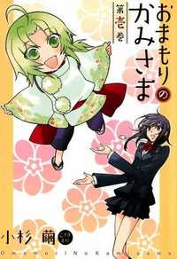

The MMM
Omamori no Kami-sama

-
Alternative Names:
Author(s): Kosugi Mayu
Genres:: Comedy, Fantasy, Romance, Shoujo, Supernatural
Release:2006
Status: Complete
Type: Manga
Length: Volumes Chapters
Read Online @:
More Info @:
Notes
Inside of Omamori's there lie little gods that help the owner with their wish to their utmost. Matsuri is a priestess that makes omamori's and she doesn't believe that her omamori's are special until one day her omamori's strap breakes and a little god pops out! What does she do?? of course she starts shrieking about monsters and throwing things at him (last of shich is a cute little stuffd bear about the same size as Mimori, the god). We follow how the two of em them intereact with each other and other omamoris' they encounter. It is super super cute! You should read it <3